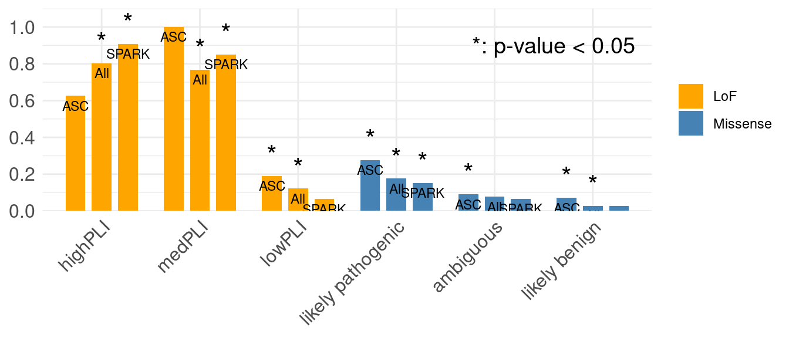
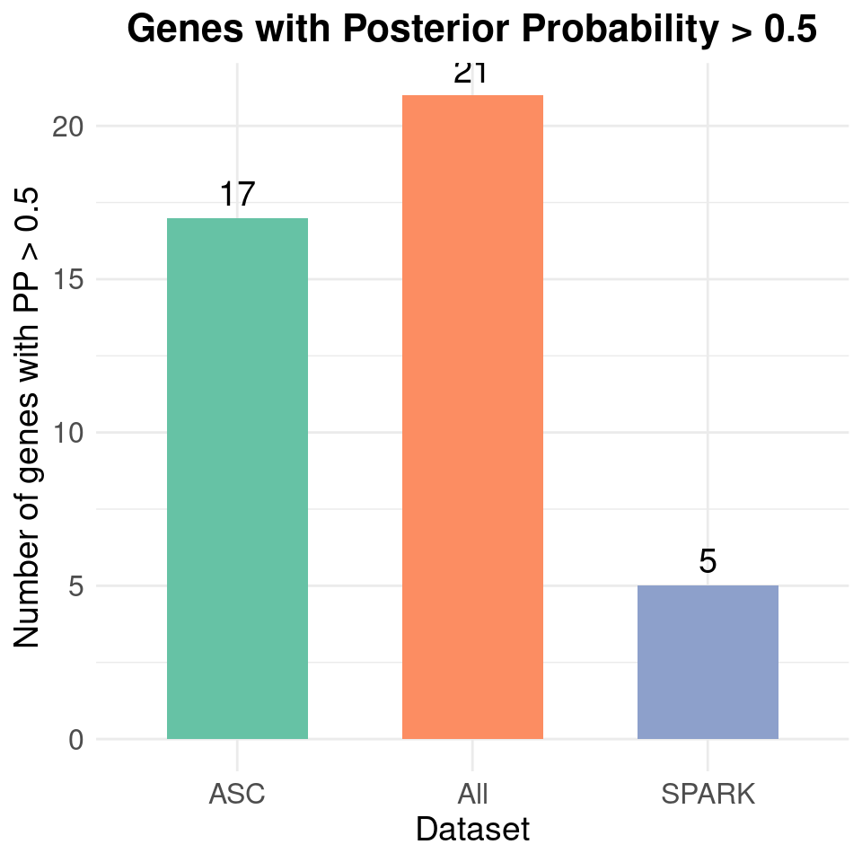
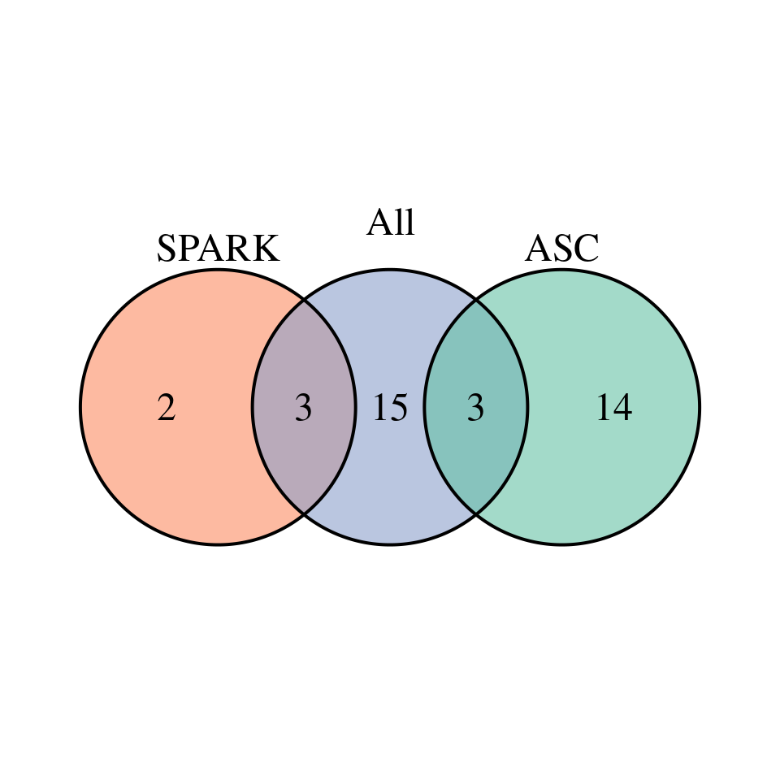
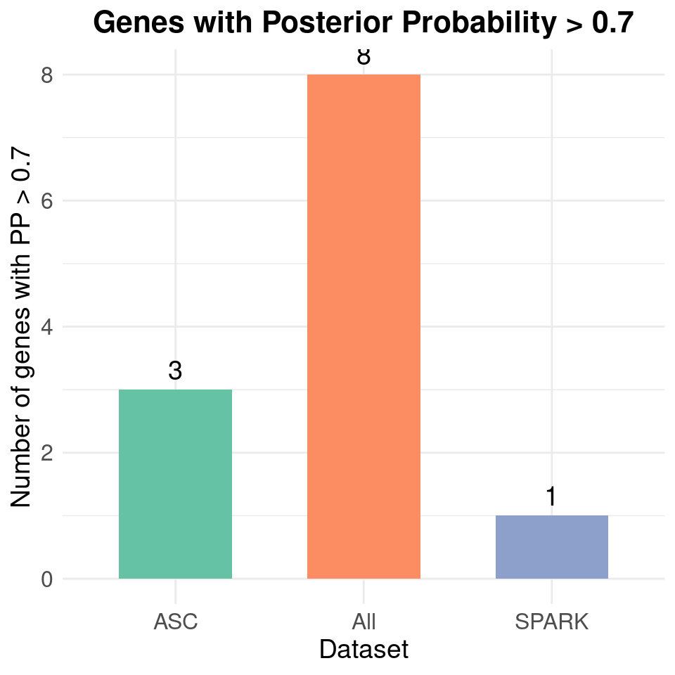
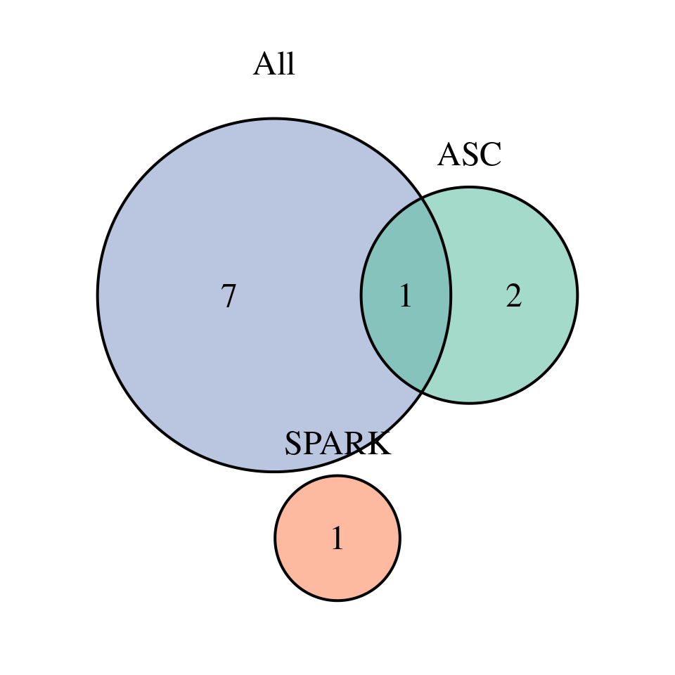

Last updated: 2025-07-02
Checks: 6 1
Knit directory: rarevariant/
This reproducible R Markdown analysis was created with workflowr (version 1.7.0). The Checks tab describes the reproducibility checks that were applied when the results were created. The Past versions tab lists the development history.
The R Markdown is untracked by Git. To know which version of the R
Markdown file created these results, you’ll want to first commit it to
the Git repo. If you’re still working on the analysis, you can ignore
this warning. When you’re finished, you can run
wflow_publish to commit the R Markdown file and build the
HTML.
Great job! The global environment was empty. Objects defined in the global environment can affect the analysis in your R Markdown file in unknown ways. For reproduciblity it’s best to always run the code in an empty environment.
The command set.seed(20250619) was run prior to running
the code in the R Markdown file. Setting a seed ensures that any results
that rely on randomness, e.g. subsampling or permutations, are
reproducible.
Great job! Recording the operating system, R version, and package versions is critical for reproducibility.
Nice! There were no cached chunks for this analysis, so you can be confident that you successfully produced the results during this run.
Great job! Using relative paths to the files within your workflowr project makes it easier to run your code on other machines.
Great! You are using Git for version control. Tracking code development and connecting the code version to the results is critical for reproducibility.
The results in this page were generated with repository version 0b8457e. See the Past versions tab to see a history of the changes made to the R Markdown and HTML files.
Note that you need to be careful to ensure that all relevant files for
the analysis have been committed to Git prior to generating the results
(you can use wflow_publish or
wflow_git_commit). workflowr only checks the R Markdown
file, but you know if there are other scripts or data files that it
depends on. Below is the status of the Git repository when the results
were generated:
Untracked files:
Untracked: VennDiagram.2025-07-02_09-39-54.log
Untracked: VennDiagram.2025-07-02_09-39-55.log
Untracked: VennDiagram.2025-07-02_09-54-02.log
Untracked: VennDiagram.2025-07-02_09-54-03.log
Untracked: VennDiagram.2025-07-02_09-55-51.log
Untracked: VennDiagram.2025-07-02_10-13-22.log
Untracked: VennDiagram.2025-07-02_10-13-23.log
Untracked: analysis/mirage_subcohort.Rmd
Note that any generated files, e.g. HTML, png, CSS, etc., are not included in this status report because it is ok for generated content to have uncommitted changes.
There are no past versions. Publish this analysis with
wflow_publish() to start tracking its development.
library(ggplot2)
library(dplyr)
library(ggrepel)
library(data.table)
library(tidyr)
library(gridExtra)
#cat <- c("high LOEUF oe", "med LOEUF oe", "low LOEUF oe", "likely pathogenic", "ambiguous", "likely benign")
cat <- c("highPLI", "medPLI", "lowPLI", "likely pathogenic", "ambiguous", "likely benign")
cat_old <- c("highPLI", "medPLI", "lowPLI", "highMPC", "medMPC", "lowMPC")
lof_cats <- c("highPLI", "medPLI", "lowPLI")
plot_PP_threshold_counts <- function(..., threshold = 0.5, sources = NULL) {
gene_lists <- list(...)
if (is.null(sources)) {
sources <- paste0("Dataset_", seq_along(gene_lists))
}
if (length(gene_lists) != length(sources)) {
stop("Length of gene_lists and sources must match.")
}
# Count genes passing the threshold
counts <- data.frame(
source = sources,
pass_PP = sapply(gene_lists, function(df) sum(df$post_prob > threshold))
)
# Plot
library(ggplot2)
ggplot(counts, aes(x = source, y = pass_PP, fill = source)) +
geom_bar(stat = "identity", width = 0.6) +
geom_text(aes(label = pass_PP), vjust = -0.5, size = 5) +
scale_fill_brewer(palette = "Set2") +
theme_minimal() +
labs(
x = "Dataset",
y = paste0("Number of genes with PP > ", threshold),
title = paste0("Genes with Posterior Probability > ", threshold)
) +
theme(
legend.position = "none",
axis.text = element_text(size = 12),
axis.title = element_text(size = 14),
plot.title = element_text(size = 16, face = "bold", hjust = 0.5)
)
}
plot_gene_venn <- function(...,
sources = NULL,
threshold = 0.5,
save_file = FALSE,
filename = "gene_venn.png",
width = 6, height = 6, dpi = 300,
return_gene_sets = TRUE) {
# Required packages
require(VennDiagram)
require(RColorBrewer)
require(grid)
gene_dfs <- list(...)
if (is.null(sources)) {
sources <- paste0("Dataset_", seq_along(gene_dfs))
}
if (length(gene_dfs) != length(sources)) {
stop("The number of gene data frames and sources must match.")
}
# Extract gene sets with post_prob > threshold
gene_sets <- lapply(gene_dfs, function(df) {
df$Gene[df$post_prob > threshold]
})
names(gene_sets) <- sources
# Define fill colors
set2_colors <- brewer.pal(n = length(gene_sets), name = "Set2")
# Create Venn diagram
venn_obj <- venn.diagram(
x = gene_sets,
filename = if (save_file) filename else NULL,
fill = set2_colors,
alpha = 0.6,
cex = 1.5,
cat.cex = 1.5,
cat.pos = 0,
cat.dist = 0.05,
margin = 0.1
)
if (!save_file) {
grid.newpage()
grid.draw(venn_obj)
}
# Return the gene sets or intersections
if (return_gene_sets) {
return(gene_sets)
}
}print("Input for all")[1] "Input for all"mirage_input_all <- readRDS("/project/xinhe/xsun/rare_variants/5.revision/data/mirage_input_misupdated.RDS")
new_mirage <- table(mirage_input_all$group.index)[c("1","2","3","4","5","6")]
names(new_mirage) <- cat
sprintf("Number of rare-variants = %s",nrow(mirage_input_all))[1] "Number of rare-variants = 1511955"print(new_mirage) highPLI medPLI lowPLI likely pathogenic
3067 3461 71077 261445
ambiguous likely benign
143866 1029039 print("Input for ASC")[1] "Input for ASC"mirage_input_asc <- readRDS("/project/xinhe/xsun/rare_variants/5.revision/data/mirage_input_ASC_misupdated.RDS")
new_mirage <- table(mirage_input_asc$group.index)[c("1","2","3","4","5","6")]
names(new_mirage) <- cat
sprintf("Number of rare-variants = %s",nrow(mirage_input_asc))[1] "Number of rare-variants = 899343"print(new_mirage) highPLI medPLI lowPLI likely pathogenic
1389 1535 36863 150927
ambiguous likely benign
85359 623270 print("Input for SPARK")[1] "Input for SPARK"mirage_input_spark <- readRDS("/project/xinhe/xsun/rare_variants/5.revision/data/mirage_input_SPARK_misupdated.RDS")
new_mirage <- table(mirage_input_spark$group.index)[c("1","2","3","4","5","6")]
names(new_mirage) <- cat
sprintf("Number of rare-variants = %s",nrow(mirage_input_spark))[1] "Number of rare-variants = 932964"print(new_mirage) highPLI medPLI lowPLI likely pathogenic
1795 2084 43731 151541
ambiguous likely benign
86882 646931 mirage_res_asc <- readRDS("/project/xinhe/xsun/rare_variants/5.revision/results/mirage_res/mirage_ASC_misupdated.RDS")
est_asc <- mirage_res_asc$eta.est[c("1","2","3","4","5","6")]
names(mirage_res_asc$eta.pvalue) <- names(mirage_res_asc$eta.est)
pval_asc <- mirage_res_asc$eta.pvalue[c("1","2","3","4","5","6")]
mirage_res_spark <- readRDS("/project/xinhe/xsun/rare_variants/5.revision/results/mirage_res/mirage_SPARK_misupdated.RDS")
est_spark <- mirage_res_spark$eta.est[c("1","2","3","4","5","6")]
names(mirage_res_spark$eta.pvalue) <- names(mirage_res_spark$eta.est)
pval_spark <- mirage_res_spark$eta.pvalue[c("1","2","3","4","5","6")]
mirage_res_all <- readRDS("/project/xinhe/xsun/rare_variants/5.revision/results/mirage_res/mirage_misupdated.RDS")
est_all <- mirage_res_all$eta.est[c("1","2","3","4","5","6")]
names(mirage_res_all$eta.pvalue) <- names(mirage_res_all$eta.est)
pval_all <- mirage_res_all$eta.pvalue[c("1","2","3","4","5","6")]n <- length(cat)
df_long <- data.frame(
cat = rep(cat, times = 3), # each cat appears 3 times (once per source)
est = c(est_asc, est_spark, est_all),
pval = c(pval_asc, pval_spark, pval_all),
source = rep(c("ASC", "SPARK", "All"), each = n) # source groups repeat every n rows
)
# Define LoF vs Missense groups
df_long$legend <- ifelse(df_long$cat %in% lof_cats, "LoF", "Missense")
df_long$legend <- factor(df_long$legend, levels = c("LoF", "Missense"))
# Set desired order of categories
df_long$cat <- factor(df_long$cat, levels = cat)
# Plot
p <- ggplot(df_long, aes(x = cat, y = est, fill = legend)) +
# Main grouped bars
geom_bar(
aes(group = source),
stat = "identity",
position = position_dodge(width = 0.8),
width = 0.6
) +
# Add p-value significance stars above the bars
geom_text(
aes(label = ifelse(pval < 0.05, "*", ""), group = source),
position = position_dodge(width = 0.8),
vjust = -0.6, size = 6
) +
# Add source labels inside the bars
geom_text(
aes(label = source, group = source),
position = position_dodge(width = 0.8),
vjust = 1.5, size = 3, color = "black"
) +
# Add explanation for asterisk
annotate("text", x = Inf, y = 0.9, label = "*: p-value < 0.05", hjust = 1.1, size = 5) +
# Theme and styling
theme_minimal() +
theme(
axis.title.x = element_blank(),
axis.title.y = element_blank(),
axis.text.x = element_text(angle = 45, hjust = 1, size = 12),
axis.text.y = element_text(size = 12),
legend.title = element_blank()
) +
scale_y_continuous(breaks = seq(0, 1, 0.2), expand = expansion(mult = c(0, 0.1))) +
scale_fill_manual(values = c("LoF" = "orange", "Missense" = "steelblue"))
# Print plot
print(p)
gene_pip_asc <- readRDS("/project/xinhe/xsun/rare_variants/5.revision/results/mirage_res/gene_pp_bf_posadded_ASC_misupdated.RDS")
gene_pip_spark <- readRDS("/project/xinhe/xsun/rare_variants/5.revision/results/mirage_res/gene_pp_bf_posadded_SPARK_misupdated.RDS")
gene_pip_all <- readRDS("/project/xinhe/xsun/rare_variants/5.revision/results/mirage_res/gene_pp_bf_posadded_misupdated.RDS")
plot_PP_threshold_counts(
gene_pip_asc, gene_pip_spark, gene_pip_all,
sources = c("ASC", "SPARK", "All"),
threshold = 0.5
)
gene_sets <- plot_gene_venn(
gene_pip_asc, gene_pip_spark, gene_pip_all,
sources = c("ASC", "SPARK", "All"),
threshold = 0.5
)
print("Overlap for ASC and ALL")[1] "Overlap for ASC and ALL"intersect(gene_sets$ASC, gene_sets$All)[1] "ARAP2" "PRTG" "AHNAK"print("Overlap for SPARK and ALL")[1] "Overlap for SPARK and ALL"intersect(gene_sets$SPARK, gene_sets$All)[1] "LMNB1" "PTPRF" "OR11H6"plot_PP_threshold_counts(
gene_pip_asc, gene_pip_spark, gene_pip_all,
sources = c("ASC", "SPARK", "All"),
threshold = 0.7
)
gene_sets <- plot_gene_venn(
gene_pip_asc, gene_pip_spark, gene_pip_all,
sources = c("ASC", "SPARK", "All"),
threshold = 0.7
)
print("Overlap for ASC and ALL")[1] "Overlap for ASC and ALL"intersect(gene_sets$ASC, gene_sets$All)[1] "ARAP2"print("Overlap for SPARK and ALL")[1] "Overlap for SPARK and ALL"intersect(gene_sets$SPARK, gene_sets$All)character(0)DT::datatable(gene_pip_asc[gene_pip_asc$PP > 0.5,],caption = htmltools::tags$caption( style = 'caption-side: left; text-align: left; color:black; font-size:150% ;','Genes with PP >0.5, from ASC'),options = list(pageLength = 10) )DT::datatable(gene_pip_spark[gene_pip_spark$PP > 0.5,],caption = htmltools::tags$caption( style = 'caption-side: left; text-align: left; color:black; font-size:150% ;','Genes with PP >0.5, from SPARK'),options = list(pageLength = 10) )DT::datatable(gene_pip_all[gene_pip_all$PP > 0.5,],caption = htmltools::tags$caption( style = 'caption-side: left; text-align: left; color:black; font-size:150% ;','Genes with PP >0.5, from ALL'),options = list(pageLength = 10) )
sessionInfo()R version 4.2.0 (2022-04-22)
Platform: x86_64-pc-linux-gnu (64-bit)
Running under: CentOS Linux 7 (Core)
Matrix products: default
BLAS/LAPACK: /software/openblas-0.3.13-el7-x86_64/lib/libopenblas_haswellp-r0.3.13.so
locale:
[1] C
attached base packages:
[1] grid stats graphics grDevices utils datasets methods
[8] base
other attached packages:
[1] RColorBrewer_1.1-3 VennDiagram_1.7.3 futile.logger_1.4.3
[4] gridExtra_2.3 tidyr_1.3.0 data.table_1.14.2
[7] ggrepel_0.9.1 dplyr_1.1.4 ggplot2_3.5.1
loaded via a namespace (and not attached):
[1] tidyselect_1.2.0 xfun_0.41 bslib_0.3.1
[4] purrr_1.0.2 colorspace_2.0-3 vctrs_0.6.5
[7] generics_0.1.2 htmltools_0.5.2 yaml_2.3.5
[10] utf8_1.2.2 rlang_1.1.2 jquerylib_0.1.4
[13] later_1.3.0 pillar_1.9.0 glue_1.6.2
[16] withr_2.5.0 lambda.r_1.2.4 lifecycle_1.0.4
[19] stringr_1.5.1 munsell_0.5.0 gtable_0.3.0
[22] workflowr_1.7.0 htmlwidgets_1.5.4 evaluate_0.15
[25] labeling_0.4.2 knitr_1.39 fastmap_1.1.0
[28] crosstalk_1.2.0 httpuv_1.6.5 fansi_1.0.3
[31] highr_0.9 Rcpp_1.0.12 DT_0.22
[34] promises_1.2.0.1 scales_1.3.0 formatR_1.12
[37] jsonlite_1.8.0 farver_2.1.0 fs_1.5.2
[40] digest_0.6.29 stringi_1.7.6 rprojroot_2.0.3
[43] cli_3.6.1 tools_4.2.0 magrittr_2.0.3
[46] sass_0.4.1 tibble_3.2.1 futile.options_1.0.1
[49] pkgconfig_2.0.3 rmarkdown_2.25 rstudioapi_0.13
[52] R6_2.5.1 git2r_0.30.1 compiler_4.2.0